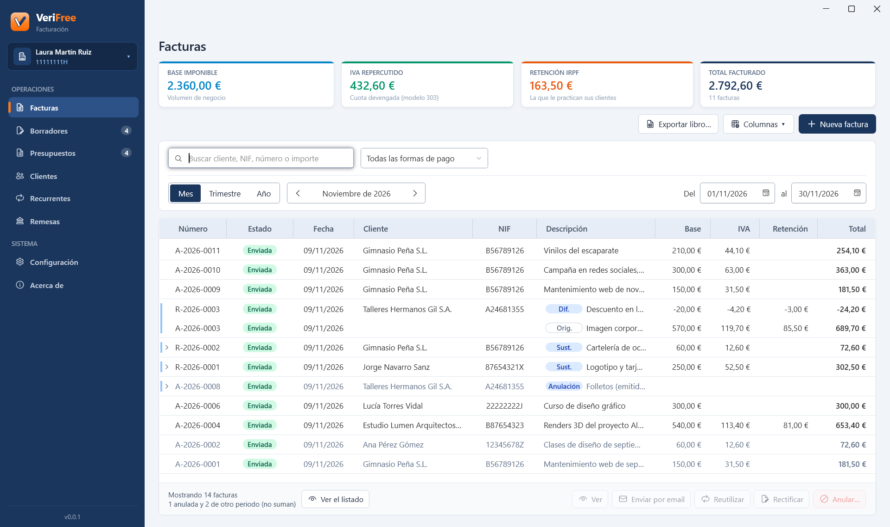

Manual de usuario
Todo lo necesario para empezar a facturar con VeriFree, en el orden en que lo vas a necesitar.
1. Instalar
VeriFree se instala con su instalador, VeriFree-instalador.exe (puedes descargarlo aquí). Es el mismo programa para probarlo y para facturar de verdad: la licencia se carga después, en el programa. Funciona en Windows 10 u 11 de 64 bits y lleva dentro todo lo que necesita. Para instalarlo:
- Abre VeriFree-instalador.exe. Si Windows SmartScreen muestra un aviso, pulsa Más información y después Ejecutar de todas formas.
- Windows te pregunta si permites que haga cambios en el equipo: pulsa Sí. VeriFree se instala en «Archivos de programa», para todos los usuarios del equipo.
- Elige si quieres tenerlo también en el escritorio y pulsa Siguiente. Al pulsar Finalizar se abre, y desde entonces lo tienes en el menú Inicio.
Tus datos se guardan aparte del programa, en la carpeta VeriFree de tu usuario de Windows (C:\Users\<tu usuario>\VeriFree), con una carpeta por empresa. Cada usuario de Windows tiene los suyos. Dónde están te lo dice Acerca de › Sus datos.
Para comprobar que el instalador es el original, mira Descargas.
Cómo actualizar a una nueva versión
En Acerca de, Buscar actualizaciones consulta si hay una versión nueva, sin enviar ningún dato tuyo. Si la hay, te dice qué trae y, al pulsar Actualizar, la descarga y la instala: antes guarda una copia de tus datos, Windows te pide permiso y el programa se vuelve a abrir con la versión nueva. Si tu licencia no cubre esa versión, te ofrece renovarla.
También puedes hacerlo a mano: descarga el instalador de la versión nueva y ábrelo. Si VeriFree está abierto, lo cierra antes (si tienes algo sin guardar, te pide que lo cierres tú). Si tu licencia no cubre esa versión, te lo explica y no instala nada. Tus datos no se tocan. La versión que tienes se ve en Acerca de.
Desinstalar
En Configuración de Windows › Aplicaciones. Quita el programa, nunca tus datos: si lo vuelves a instalar, los encontrarás como estaban.
2. Crear la empresa
La primera vez, el programa pide los datos fiscales de la empresa: el NIF, el nombre (o el nombre y los apellidos, si eres persona física) y el domicilio (dirección, código postal, población, provincia y país). Debajo, si quieres, el IBAN, que se imprime en las facturas por transferencia, y el móvil de Bizum, que se imprime en las facturas por Bizum. Pulsa Crear la empresa y ya puedes facturar.
Toda empresa empieza en el modo de pruebas, y arriba se ve la etiqueta PRUEBAS: puedes probarlo todo con tus datos, y las facturas llevan su propia numeración, con «PRU-» delante, y no tienen validez. Cuando quieras facturar de verdad, activa VERI*FACTU (ver Activar VERI*FACTU).
Varias empresas
Arriba a la izquierda está el nombre de la empresa abierta. Púlsalo para cambiar a otra o elige Crear una empresa nueva…. Cada empresa tiene sus facturas, sus clientes, su numeración y su configuración por separado, empieza en el modo de pruebas y activa VERI*FACTU por su cuenta.
3. Configuración
En Configuración hay una pestaña para cada cosa. Guardar cambios guarda lo escrito en Empresa, Facturas y Email; si cambias de pestaña o cierras el programa con cambios sin guardar, te pregunta si quieres guardarlos. Lo de Series, VERI*FACTU y Factura electrónica se guarda al momento.
- Empresa
- Los datos fiscales, que se copian en cada factura al emitirla; la cuenta (IBAN) y el móvil de Bizum, que se imprimen en las facturas por transferencia y por Bizum; y la actividad económica, para el libro registro.
- Facturas
- El aspecto de facturas y presupuestos: el logo y el texto al pie (por ejemplo, la inscripción en el Registro Mercantil o el aviso de protección de datos); Ver cómo quedan enseña una muestra. Y con qué empieza cada borrador nuevo: el IVA de los conceptos, la forma de pago, la serie y la retención.
- La cuenta de correo desde la que se envían las facturas y los presupuestos, y qué dice el email de cada factura. Ver Enviar por email.
- Series
- La serie A para las facturas y la R para las rectificativas, con una numeración que empieza cada año (A-2026-0001). Puedes crear otras y cambiar su descripción; el código y la numeración no se cambian, porque forman parte de los números de las facturas.
- VERI*FACTU
- Si la empresa está en el modo de pruebas o tiene VERI*FACTU activado, su Licencia Oficial, el certificado con el que se envía, el paso de activar VERI*FACTU, cómo va el envío y los datos del productor del programa. Ver Envío a la AEAT.
- Factura electrónica
- La firma de las facturas electrónicas y la carpeta donde se guarda una copia. Ver Factura electrónica.
Acerca de, en la barra lateral, tiene la versión del programa, dónde están tus datos y las copias de seguridad, Buscar actualizaciones, la declaración responsable del productor (en PDF, para guardarla o imprimirla) y las licencias de terceros.
4. Hacer una factura
Las facturas se preparan en un borrador y se emiten cuando están bien. Un borrador se puede cambiar cuantas veces quieras; una factura emitida, no.
Pulsa Nueva factura, en Facturas, en Borradores o en la ficha de un cliente. El editor va en una columna, en el orden de la factura:
- Cliente: búscalo en Clientes por su nombre, su NIF o su población, o pulsa Escribir un cliente nuevo. Elegido, sale en resumen. Corregir sus datos los cambia solo para esta factura: Usar en esta factura los deja así, Dejar como estaba los descarta y Guardar en Clientes los guarda también en la agenda.
- Pago y retención: la forma de pago y la retención de IRPF van con el cliente y salen de su ficha; puedes cambiarlas para esta factura. La retención es de toda la factura: «Sin IRPF» o el tipo que te practique el cliente.
- Serie y fechas: la serie, la fecha de la operación (vacía, es la de la emisión) y el vencimiento, en días desde la emisión (vacío, al contado). Casi nunca se tocan: salen en resumen, con Corregir.
- Detalle: la descripción de la factura, con Cambiar (vacía, se usan las de los conceptos), y los conceptos: descripción, cantidad, precio e IVA.
A la derecha ves los totales y, en Para emitir falta, lo que falta («Falta el NIF del cliente»…). Cuando no falta nada, pone Listo para emitir.
Guardar en Borradores la deja en Borradores, para terminarla o emitirla más tarde. No hay botón Cancelar: sales con el enlace de arriba, que vuelve a la pantalla de la que viniste (← Borradores, por ejemplo) y te pregunta si hay cambios sin guardar; Descartar… la deja sin guardar. Una factura nueva no existe hasta que la guardas o la emites.
Vista previa muestra el PDF del borrador con la marca de agua «BORRADOR»: es un documento interno, no una factura ni una proforma. Para dar al cliente algo antes de facturar, haz un presupuesto o una factura proforma.
Emitir
Al pulsar Emitir… y confirmar, la factura se emite con la fecha de hoy y el siguiente número de la serie (en el modo de pruebas, con «PRU-» delante). Después no se puede modificar: si hubiera algún error, se corrige con una factura rectificativa.
En la lista de borradores puedes marcar varios y emitirlos de una vez con Emitir marcados… (solo se emiten los que estén listos) o borrarlos con Borrar marcados…. Duplicar crea una copia de un borrador.
5. Presupuestos y facturas proforma
En Presupuestos haces lo que ofreces al cliente antes de facturar. Nuevo presupuesto abre el mismo editor que una factura; arriba eliges si se saca como Presupuesto o como Factura proforma. Hasta cuándo es válido (de entrada, 30 días) y, en la proforma, el vencimiento en días salen en resumen, con Corregir. Los presupuestos y las proformas son de verdad también en el modo de pruebas: puedes mandarlos a tus clientes sin licencia.
- Recibe su número al guardarlo (P-2026-0001) y desde entonces no se puede borrar, como indica la AEAT; se puede cambiar hasta facturarlo. Ver y Enviar por email lo guardan antes, para que salga ya con su número.
- Respuesta ▾ anota si el cliente lo ha aceptado o lo ha rechazado. Uno aceptado no caduca.
- Facturar… emite la factura directamente, con la fecha de hoy y el siguiente número de la serie por defecto, y la deja ligada al presupuesto («Facturado: A-2026-0023»). Mientras le falte algo para ser factura, el editor dice qué. Uno facturado no se factura otra vez y, con doble clic, se abre en PDF; si su factura se anula, vuelve a su situación.
- Duplicar abre una copia sin guardar, para hacer otro parecido.

La lista los enseña todos, con el buscador y su situación: pendiente, aceptado, facturado, rechazado o caducado (estos dos, en gris). Uno facturado ya no se modifica: la AEAT recomienda conservar lo que se entregó al cliente antes de facturar, ligado a su factura.
6. Clientes
La agenda de clientes sirve para no escribir los datos cada vez. Cada cliente guarda sus datos fiscales, su email, su forma de pago habitual (con su IBAN si paga por domiciliación) y su retención de IRPF.
- Nuevo cliente o Abrir la ficha la abren a página completa. Guardar se activa cuando está completa, con las mismas comprobaciones que al emitir; mientras, a la derecha se dice lo que falta. No hay botón Cancelar: sales con ← Clientes, que te pregunta si hay cambios sin guardar.
- A la derecha de la ficha están sus facturas (cuántas y la última); Ver sus facturas te lleva a ellas en Facturas, con sus totales.
- Nueva factura crea un borrador con sus datos, su forma de pago y su retención; solo faltan los conceptos.
- En una factura o un presupuesto, Guardar en Clientes guarda el cliente que has escrito.
- En la lista, Columnas ▾ añade la dirección, el email o el IBAN.
Los datos del cliente se copian en cada borrador: cambiar o borrar un cliente no toca las facturas ya emitidas ni los borradores que ya lo llevan. Si un cliente cambia de domicilio, cámbialo en su ficha y las próximas facturas saldrán con el nuevo.
Importar clientes de otro programa
Importar… trae los clientes desde un Excel (.xlsx) o un CSV: el que exporta tu programa anterior o nuestra plantilla (Descargar la plantilla, en la misma pantalla). La primera fila lleva los títulos de las columnas; VeriFree reconoce los habituales (NIF o CIF, Nombre o Razón social, Dirección o Domicilio, C.P., Población o Localidad, Provincia, País, Forma de pago, IBAN, Retención y Email o Correo).
Antes de importar ves qué pasará con cada fila: las completas se importan; las que ya están en Clientes (por su NIF) se dejan igual o, si lo marcas, se actualizan con los datos del archivo; y las que tienen algún error no se importan y se dice por qué, para que las corrijas en el archivo y lo vuelvas a importar.
Si los archivos antiguos son .xls, ábrelos en Excel y guárdalos como «Libro de Excel (.xlsx)» o como CSV.
7. Facturas emitidas
En Facturas están las emitidas del periodo que elijas: Mes, Trimestre o Año, con las flechas para ir al anterior o al siguiente (el trimestre anterior, el del modelo 303, queda a un clic), o las fechas que escribas. Cada factura cuenta en el periodo de su fecha de operación; en el de su emisión, si es otro, sale en gris. Arriba ves sus totales: base imponible, IVA, retención de IRPF y total. El buscador busca en el número de la factura, en el nombre o el NIF del cliente y en el importe, y el desplegable filtra por forma de pago.
Cada factura sale con sus rectificativas en un bloque, con su etiqueta («Orig.», «Sust.», «Dif.» o «Anula»); las de otro periodo y la factura sustituida, plegadas: la flecha las despliega. Las anuladas salen en gris y no suman; si se anulan en otro periodo, salen también en el de la anulación, con «Anulada el …» delante de la descripción, para que la veas cuando la deshaces en tu contabilidad.

Con una factura elegida (al pie de la tabla y en el menú del botón derecho):
- Ver
- La factura en PDF, con el QR tributario. Desde el visor se imprime o se guarda. También se abre con doble clic en la factura. Si la factura se ha corregido, el visor lo dice en una franja, con un botón para ver la que vale ahora. Si está anulada, la franja dice desde cuándo, y Ver como se emitió te la enseña tal como salió, sin la marca de anulada: puedes guardar las dos, por ejemplo para tu contabilidad.
- Enviar por email…
- Ver Enviar por email.
- Guardar firmada
- PDF firmado… guarda el PDF de la factura firmado con tu certificado, y Factura electrónica (XML)…, la factura electrónica firmada. Ver Factura electrónica.
- Reutilizar
- Una factura nueva con el mismo cliente, los mismos conceptos y el mismo pago, para cambiar lo que haga falta.
- Rectificar
- Abre un borrador con la factura tal como está: corrígela y elige en Cómo se emite si va por sustitución o por diferencias (cada forma dice cuándo conviene). Por sustitución se emite la factura entera, corregida. Por diferencias, los conceptos pasan a ser solo lo que cambia, que es lo que se emite: una fila por concepto de la factura (en gris, los que no cambian), con «Abono» o «Cargo» según reste o sume; lo que se devuelve o se descuenta lleva el precio en negativo. Las facturas emitidas con otro programa se rectifican con ese programa.
- Anular…
- Anula una factura que no debió emitirse, sobre todo si el cliente aún no la tiene. La anulación también se envía a la AEAT. Si la factura es de un trimestre anterior, deja de contar en él: si ya lo declaraste, hay que corregir esa declaración.
- Volver a enviar a la AEAT…
- Para una factura que la AEAT rechazó, cuando la causa ya está resuelta. Ver Envío a la AEAT.
Al pie de la tabla, Ver el listado saca en PDF las facturas tal como las ves, con sus totales y el desglose por tipo de IVA. Con Columnas ▾ eliges qué columnas ves; VeriFree recuerda tu elección, su orden y su ancho.
8. Enviar por email
Enviar por email…, en Facturas y en Presupuestos, abre una ventana con el destinatario, que sale de la ficha del cliente, y el asunto y el texto de tu plantilla, todo editable.
- Con tu cuenta de correo configurada, Enviar lo manda desde tu dirección, con el PDF adjunto (y, en las facturas, también la factura electrónica). Si marcas Enviarme una copia, te llega a ti también.
- Sin ella, Escribirlo en mi programa de correo te da el destinatario, el asunto y el texto para copiarlos, y los archivos para arrastrarlos al mensaje. Abrir mi programa de correo lo abre con el destinatario, el asunto y el texto ya escritos (Outlook, Thunderbird o el correo de Windows).
La cuenta de correo
En Configuración › Email, escribe tu email y su contraseña. Con Gmail, Yahoo o iCloud el servidor se rellena solo y hace falta una contraseña de aplicación, que se crea en la página de tu proveedor (el programa te lleva a ella); con el correo de tu dominio, escribe el servidor de salida (SMTP) y el puerto que te indique tu proveedor. Enviar una prueba comprueba que funciona. Las cuentas de Outlook.com y Hotmail no se pueden usar así: Microsoft solo deja entrar en ellas con su propio inicio de sesión.
En la misma pestaña, en Qué dice el email de cada factura, está la plantilla del asunto y del texto. La contraseña se guarda cifrada con tu usuario de Windows: en otro equipo tendrás que volver a escribirla. VeriFree no guarda copia de lo que envías.
9. Envío a la AEAT
Con VERI*FACTU activado, cada factura y cada anulación se envían solas a la AEAT al emitirlas. Si no hay conexión, el programa lo vuelve a intentar solo y, mientras falte algo, lo avisa una banda arriba con un botón para resolverlo.
Activar VERI*FACTU
Cada empresa empieza en el modo de pruebas: sus facturas llevan «PRU-» delante del número y la banda «Modo de pruebas», no tienen validez y no se envían a la AEAT. Para facturar de verdad, activa VERI*FACTU en Configuración › VERI*FACTU, en tres pasos:
- Carga la Licencia Oficial de la empresa con Cargar licencia…: es el archivo que recibes al comprarla, con el NIF de la empresa. Si aún no la tienes, Comprar licencia abre la página donde se compra.
- Elige el certificado con el que se envía (ver El certificado) y, si quieres, comprueba con Probar conexión que llega a la AEAT y tiene poder para esta empresa.
- Pulsa Activar VERI*FACTU…. El programa comprueba el certificado con la AEAT y, si falta algo, te dice qué. Si todo está bien, te pide que confirmes, marcando la casilla, que desde entonces facturas de verdad.
No se puede desactivar: desde entonces, cada factura queda registrada en la AEAT con validez legal, y cada serie empieza en el 1. Las facturas de prueba se conservan con su numeración, pero no cuentan en los totales ni en el libro registro y no se anulan ni se rectifican. La licencia se guarda en la carpeta Empresas, así que entra en la copia de seguridad. Cada empresa se activa por su cuenta, aunque otra ya tenga VERI*FACTU activado.
El certificado
En Configuración › VERI*FACTU, elige el certificado con el que se envía: el de la empresa o el de quien tenga poder para enviar por ella (apoderado o colaborador social). El programa lista los certificados instalados en Windows que sirven para conectar con la AEAT; si el tuyo está en un archivo, usa Importar archivo .pfx / .p12…. Si no sabes qué certificado necesitas, lo tienes en Preguntas.
El certificado se queda en Windows: en la carpeta de la empresa no se guarda ni el certificado ni su contraseña. Por eso, en otro equipo hay que volver a instalarlo. Desde un mes antes de que caduque, una banda lo avisa: renuévalo y elige el nuevo aquí.
Si algo falla
- En la misma pestaña, Cómo va el envío dice cuántos registros quedan por enviar. Enviar ahora los envía sin esperar al próximo intento, respetando el tiempo de espera que fija la AEAT.
- En Facturas, la casilla Solo con avisos de la AEAT deja solo las facturas que la AEAT ha rechazado o ha aceptado con errores.
- Cuando la causa esté resuelta, Volver a enviar a la AEAT… envía de nuevo esa factura con los mismos datos. Si el error está en los datos de la factura, se corrige con una rectificativa o se anula.
10. Factura electrónica
Cada factura emitida tiene su factura electrónica en el formato de la AEAT (UBL), firmada justo después de emitirla con el certificado de la empresa o el de su representante (con el de otra persona, la factura figuraría expedida por ella). Lleva la dirección del QR, con la que quien la recibe comprueba en la AEAT que está registrada.
Si no se puede firmar, se sigue facturando y una banda lo avisa. Firmar ahora, en Configuración › Factura electrónica, firma lo pendiente sin esperar al próximo intento.
Ahí mismo puedes guardar una copia de cada factura firmada en una carpeta de archivo, por año y mes. La predeterminada está dentro de la carpeta de la empresa, así que entra en la copia de seguridad; también puedes elegir otra, por ejemplo una que compartas con tu asesoría. Las copias de las facturas anuladas van aparte, en la carpeta «Anuladas» de su mes.
Guardar firmada
En Facturas, Guardar firmada ofrece dos cosas: Factura electrónica (XML)… guarda la factura electrónica firmada, para enviarla al cliente; PDF firmado… guarda el PDF de la factura firmado con el certificado de la empresa, que prueba quién la expidió y que no se ha cambiado. El PDF firmado no se guarda en el programa: se firma cada vez que lo pides.
11. Libro registro
En Facturas, Exportar libro… guarda el libro registro de facturas expedidas del ejercicio, hasta el final del periodo elegido, en el formato de la AEAT. Es lo que suele pedir la asesoría, y lleva también la hoja de facturas recibidas vacía, para que ella añada los gastos.
Antes, elige la actividad económica de la empresa en Configuración › Empresa: se busca por su nombre en la lista de actividades y epígrafes del IAE de la AEAT.
12. Facturas recurrentes
En Recurrentes guardas lo que facturas a un cliente cada cierto tiempo, y lo emites cuando quieres, sin pasar por Borradores. Nueva recurrente abre su ficha:
- El cliente, de la agenda. Su forma de pago y su retención son siempre las de su ficha.
- La descripción de la factura, la serie y el periodo que se factura: semana, quincena, mes, trimestre o año. El periodo solo decide qué ponen los comodines
{periodo}y{periodo pasado}, que se insertan con Este periodo y El periodo pasado donde esté el cursor, en la descripción o en un concepto. Al emitir se cambian por el periodo del día de la emisión: «Mantenimiento de {periodo}» sale como «Mantenimiento de noviembre de 2026». Con{periodo pasado}se factura a periodo vencido. - Los conceptos, como en una factura, y si vence a unos días de emitirla (si no, al contado).
- A la derecha, Así saldría hoy.

La lista no tiene calendario: nada viene marcado, y cada recurrente dice cuándo salió su última factura y si se anuló. Marca las que quieres facturar; Ver el listado te las enseña en PDF antes de emitirlas, y Emitir marcadas… las emite todas de una vez.
Retocar… cambia algo solo en la próxima factura de una recurrente (un concepto de más, otro precio), sin tocar las siguientes; se emite después desde la lista, con las demás. Quitar el retoque… la deja otra vez como la recurrente. Para cambiar todas las facturas que se emitan desde ahora, abre la recurrente y cámbiala. No hay pausa ni fecha de fin: si una deja de hacer falta, Borrar… la quita, y las facturas ya emitidas no cambian.
13. Remesas SEPA
En Remesas cobras de una vez las facturas domiciliadas: generas el fichero de adeudos directos SEPA y lo subes en la web de tu banco. La pantalla enseña las remesas que has generado.
- Pulsa Nueva remesa. Salen las facturas domiciliadas del periodo que elijas (de entrada, el mes en curso), y vienen marcadas las que aún no han ido en ninguna remesa; la columna Última remesa dice en cuál ha ido cada una. Marca o desmarca las que quieras, por ejemplo para volver a cobrar un recibo devuelto.
- Las que aún no se pueden cobrar llevan un aviso en lugar de la casilla; al pasar el ratón por él, dice qué falta. Si es la orden de domiciliación del cliente, elige la factura y pulsa Orden de domiciliación… (o haz doble clic en ella) para escribir su referencia y la fecha en que el cliente la firmó. Si aún no la tiene, Orden para firmar te da el modelo de la banca española, relleno, para imprimirlo.
- Para cobrar por remesa una factura de otra forma de pago, o en otra cuenta, marca Ver también las de otras formas de pago y usa Cuenta para el cobro…: la factura no cambia.
- Elige el día de cobro en Cobrar el (de entrada, el primero posible: el banco necesita el fichero con unos días de antelación) y pulsa Generar remesa…, que crea el fichero para el banco y su listado en PDF.

En la lista de remesas, Guardar fichero para el banco… lo vuelve a guardar y Ver el listado enseña su PDF. Borrar… quita una remesa, por ejemplo si no la llegaste a subir: las facturas no cambian. El identificador de acreedor se calcula de tu NIF; si tu banco te ha dado un código comercial distinto de 000, cámbialo con Cambiar, junto al identificador, en Nueva remesa.
VeriFree no lleva el control de cobros: no marca facturas como cobradas, solo dice en qué remesa ha ido cada una.
14. Copias de seguridad y seguridad de los datos
Al ser un software local sin servidores intermedios, la custodia legal y conservación de tus registros corresponde a tu empresa (art. 29.2.e LGT). Todo lo de cada empresa está en su carpeta, dentro de la carpeta VeriFree de tu usuario de Windows (C:\Users\<tu usuario>\VeriFree).
En Acerca de › Sus datos:
- Hacer una copia de seguridad… guarda en un solo archivo todas tus empresas, con sus facturas electrónicas, donde elijas: un disco externo, una memoria USB o tu nube. No hace falta cerrar el programa. Si pasa un mes sin hacerla, una banda arriba te lo recuerda.
- Restaurar una copia… recupera tus empresas desde una copia, una a una: añade las que no tienes en este equipo y pone al día las que en la copia son más recientes; las demás se quedan como están. Si en alguna la copia es más antigua que tus datos, solo vuelve a ella si lo marcas: las facturas posteriores ya están en la AEAT, y volver a emitir sus números daría error. Antes de cambiar nada guarda una copia de los datos de ahora, por si acaso.
- Borrar esta empresa…, al final de Configuración › Empresa, la quita de este equipo. Si tiene VERI*FACTU activado, antes guarda sus datos en un archivo con solo esa empresa: es lo que se entrega si dejas de llevarla, y con él se recupera.
Para pasar a un equipo nuevo: haz una copia, instala VeriFree en el equipo nuevo y, al abrirlo, pulsa Restaurar una copia… en Crear empresa. Después instala tu certificado digital y, si envías los emails desde VeriFree, vuelve a escribir la contraseña del correo. Por seguridad, ni el certificado ni esa contraseña van en la copia.
Recomendaciones de seguridad y prevención
- Copias periódicas externas: Guarda una copia semanal o mensual en una memoria USB o disco duro externo que desconectes tras la copia. Así tus bases de datos quedarán completamente a salvo incluso ante incidentes graves de avería física o ataques de ransomware en tu red.
- Copias en la nube: Puedes guardar las copias en OneDrive, Google Drive, Dropbox o iCloud.
- Copia del certificado digital: Conserva el archivo instalador original de tu certificado digital (archivo
.pfxo.p12con su contraseña) en un pendrive seguro por si necesitas cambiar o formatear tu equipo con urgencia.